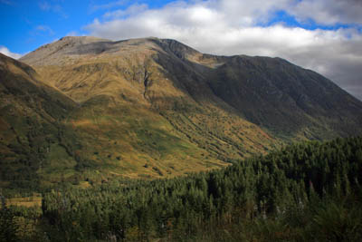
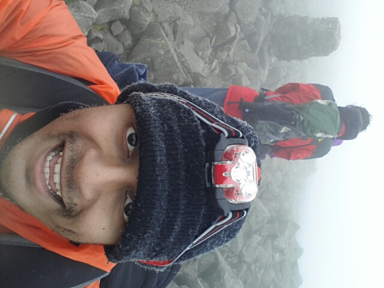

Raised $268.00 for a Montessori school

Charity trek up 4,409 ft summit of 'The Ben' aka Ben Nevis, the highest mountain in the British Isles.. Raised £240.00 for a Montessori school. Took 13 hours due to both myself and my wife injuring ourselves at the peak, leading to a very slow and painful decent, requiring a full week to recover from.

Two years ago I along with my wife (Dr Sharmin Ria) and friends climbed Ben Nevis to raise funds for our friends who run an ofsted approved Montessori pre-school. Both myself and my wife were one of the very last ones off the Mountain (we took 13hours!) due to injuries at the peak and could barely walk for a week afterwards.
This climb raised a total of £11,629 for the Pre-School Montessori Project from 266 online donations alone (from Just Giving). Thankfully no injuries.
Raised $268.00 for a Montessori school